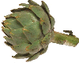
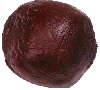
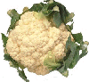
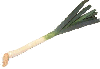
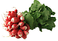
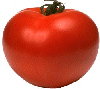

Accueil
Accueil
Notre société commercialise nombre de produits savoureux. En voici la liste... Veuillez prendre contact avec notre service clientèle si vous désirez passer commande d'un légume exotique.
- Artichaut. Souvent associé avec les marrons (artichaut les marrons)
- Betterave. Un produit révé pour les soirées impromptues de musique techno dans les prés.
- Chou-fleur. Se sert parfois en bouquet. Il est donc idéal avec des crevettes.
 Epinard. Le produit parfait pour une soirée très arrosée au vin rouge !
Epinard. Le produit parfait pour une soirée très arrosée au vin rouge ! Haricot. "Un légume proprement ma-gi-que", d'après le célèbre critique gastronomique Harry Cotter.
Haricot. "Un légume proprement ma-gi-que", d'après le célèbre critique gastronomique Harry Cotter. Oignon. Un autre produit d'accompagnement des marrons, châtaignes et autres pralines.
Oignon. Un autre produit d'accompagnement des marrons, châtaignes et autres pralines.- Poireau. Le renommé mathématicien Evariste Galois prenait toujours soin de se munir d'une botte de ce délicieux légume avant de descendre sur le pré, sauf une fois, le jour de son décès. La coutume s'est perpétuée jusqu'à nous chez certains rugbymen britanniques.
 Petits pois. Notre gamme en propose deux variétés. La variété classique, verte, mais également une seconde variété, rouge, idéale en accompagnement de plats de poisson.
Petits pois. Notre gamme en propose deux variétés. La variété classique, verte, mais également une seconde variété, rouge, idéale en accompagnement de plats de poisson. Pomme de terre. Ce tubercule, que l'on ne présente plus, est très apprécié de nos amis anthropophages spécialisés dans les membres d'équipages de navires échoués, puisque lesdits membres ne sont pas trop hommes de terre.
Pomme de terre. Ce tubercule, que l'on ne présente plus, est très apprécié de nos amis anthropophages spécialisés dans les membres d'équipages de navires échoués, puisque lesdits membres ne sont pas trop hommes de terre.- Radis. Le produit le meilleur marché de notre sélection, puisqu'une botte n'en coûte même pas un.
- Tomate. Un légume-fruit apprécié en accompagnement de la viande rare du taureau espagnol, que la tomate adore.